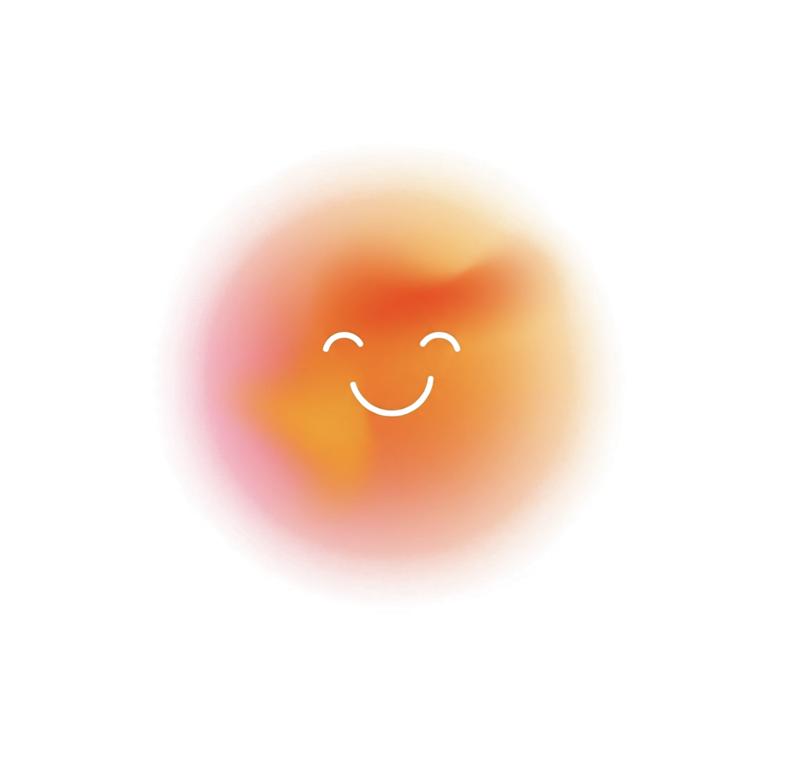
Venture · H FarmR.O.S.S.
AI companion for elderly patients with cognitive decline. On device AI. Built in 24h at H HACK, selected among top projects, now in H Farm's venture building program.
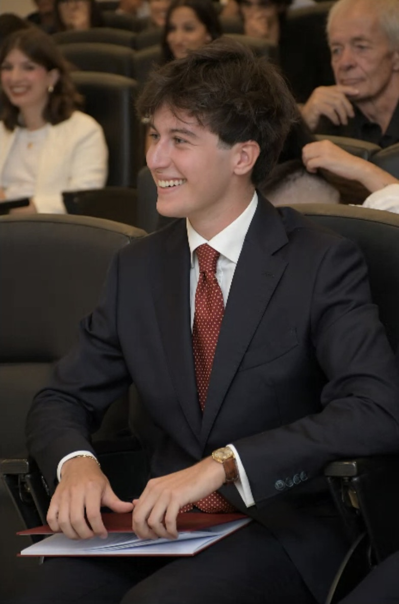
Economics graduate · H Farm Startup Centre · Cofounder R.O.S.S. · MSc Digital Transformation
At 17 I launched a Shopify store, my first attempt at building something from scratch. After a degree in Economics in Cagliari, I chose H Farm's MSc in Digital Transformation & Entrepreneurship deliberately: I wanted to be in an environment where startups aren't studied but lived, with the explicit goal of applying to the pre acceleration program. I was selected, and worked on Agromercato.com, a B2B marketplace connecting wholesale produce operators with professional buyers, targeting a market of €150M+ turnover. During my master's I built LocaLì, a platform for international students navigating an unfamiliar city, born from a problem I lived firsthand during Erasmus. I'm now cofounder of ROSS, an AI robot companion designed to slow cognitive decline in elderly patients, currently in H Farm's venture building program.
Business and market thinking applied to early stage ventures. I identify problems, build the case around them, and execute under uncertainty.
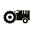
H Farm College / University of Chichester MSc Digital Transformation & Entrepreneurship · 2025–present H Farm Startup Centre Pre Acceleration Program · Spring 2025 Kazimieras Simonavicius University Erasmus+ · Vilnius · 2025 Università degli Studi di Cagliari Economics & Business Management · 2022–2025
Venture · H FarmAI companion for elderly patients with cognitive decline. On device AI. Built in 24h at H HACK, selected among top projects, now in H Farm's venture building program.
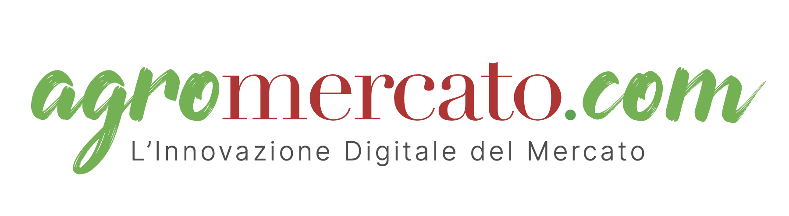
Pre Acceleration · H FarmB2B wholesale food marketplace. Three months at H Farm Startup Centre: primary research with 100+ operators, WhatsApp AI agent strategy, pilot target €150M+ market.
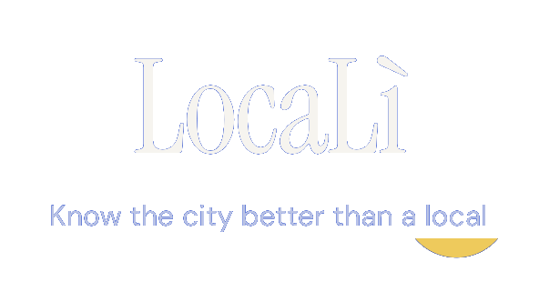
A city discovery platform for international students, built after killing the first version when the model didn't hold.
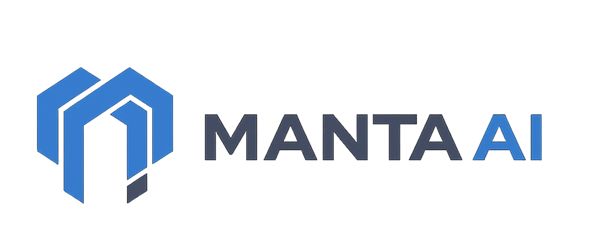
RAG voice agent for MANTA Group, aerospace supplier to Leonardo & Boeing. 500+ pages of technical manuals queryable by voice. one month sprint, cross university team of 4.
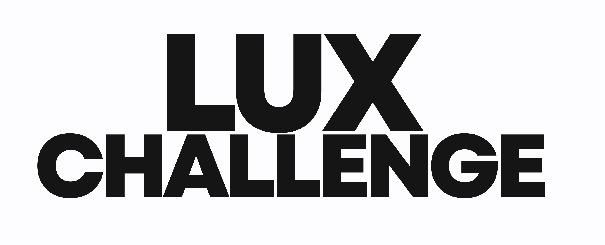
Brand innovation for SOCIO, The Lux Collective's urban lifestyle brand. Designed the social experience for the Social Nomad generation. 2nd place out of 10 teams.
ROSS was born in 24 hours at H HACK, H Farm's robotics hackathon, from a brief that asked: how can robotics assist elderly people? We focused on cognitive decline, a problem I understood not just technically, but personally. The result was selected among the top projects and entered H Farm's venture building program.
The problem
Cognitive decline affects millions of elderly people worldwide. The people who live with it don't just lose memory; they lose the thread of their own story. Existing solutions focus on monitoring and medical intervention. ROSS starts from a different question: what if the most powerful tool wasn't clinical, but relational?
What we built
An AI robot companion that interacts with elderly patients through adaptive cognitive stimulation, personalised on a biographical knowledge base, including family members, hobbies, life history, that guides every conversation. During the 24 hours of H HACK we developed the concept, the interaction design, and a working prototype of the app interface.
All voice processing runs on device. The only thing that reaches the caregiver's app is a daily narrative summary, a letter, not a dashboard, and only with explicit consent.
After the hackathon
Selected among the top projects, we continued development under H Farm's venture building program. The focus of the first month shifted from product to protection: prior art research and patent application to secure the core architecture before moving further.
Materials
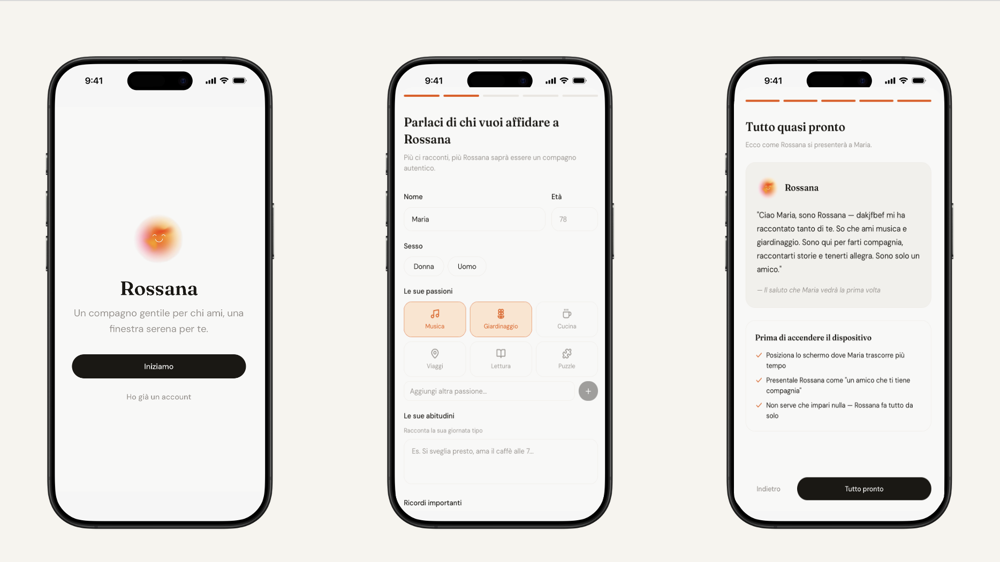
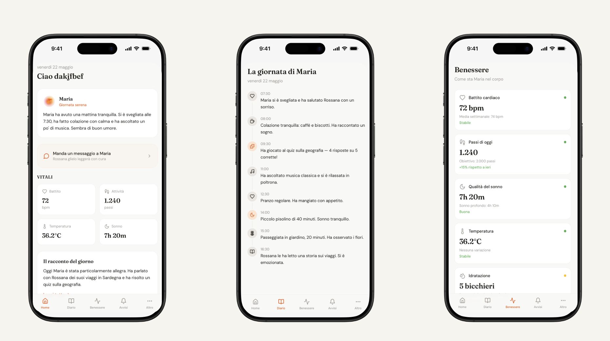
App prototype: Maria's companion side & Marco's caregiver dashboard · Designed during 24h at H HACK


H HACK 2026 · HUMAN+ Healthcare Dialogue 2026
Federico Sassu Verderi, Cofounder & Business Lead · Team: Alessandro Di Mauro (Product & Comms), Alessandra Beretta (Institutional Relations & Ops), Luca Marzotto (Tech Architecture).
MANTA AI was born from a one month collaboration between H Farm College and the University of Puglia, commissioned by MANTA Group, an aerospace manufacturer supplying Leonardo and Boeing. The brief asked us to solve a real operational problem: technical knowledge locked inside hundreds of pages of fragmented manuals, slowing down floor operators and putting audit readiness at risk.
The problem
In an aerospace manufacturing environment, procedures aren't optional; they're the difference between compliance and a costly nonconformity. But at MANTA, that knowledge lived in dozens of heterogeneous manuals. Every time an operator needed a critical piece of information, they had to stop, search, and interpret. Slow, error prone, and impossible to trace.
What we built
A RAG AI agent, accessible via voice call or text message, that ingests MANTA's technical documentation and returns precise, sourced answers in seconds. The operator asks a question. The agent queries the manuals, identifies the relevant procedure, and delivers a structured response: question, technical answer, document reference. No searching. No interpretation. No risk of transcription error.
My role
I led the team and managed the relationship with MANTA's quality control department directly, organizing meetings to map the operational problem, collecting the documentation needed to train the agent, and defining the solution scope together with the client based on their actual needs. I then prepared and delivered the final pitch, including the live demo, to a jury of representatives from 12 participating companies.
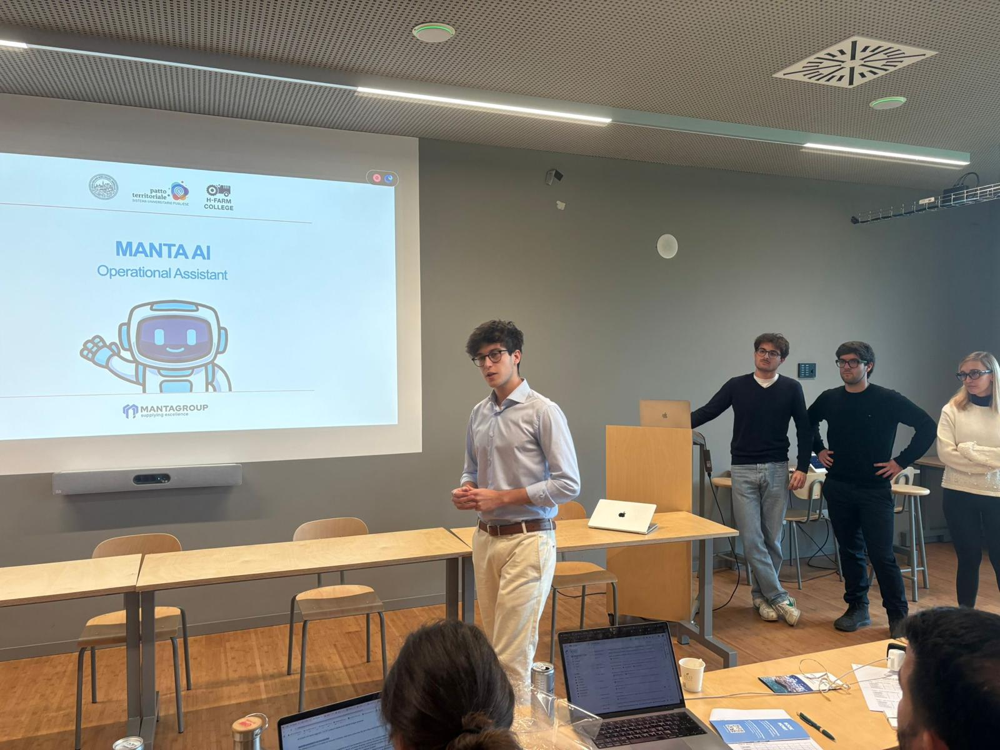
Final pitch with live demo · Impact Puglia Challenge · November 2025
Materials
Federico Sassu Verderi, Team Lead · Challenge: Impact Puglia, H Farm College × Università di Puglia.
Agromercato.com was a new B2B marketplace connecting wholesale produce operators with professional buyers: restaurants, retailers, procurement teams, built to digitise a market still running on phone calls and paper orders. I proactively brought the project into H Farm's pre acceleration program, seeing an opportunity to stress test the model and define a real go to market strategy before launch.
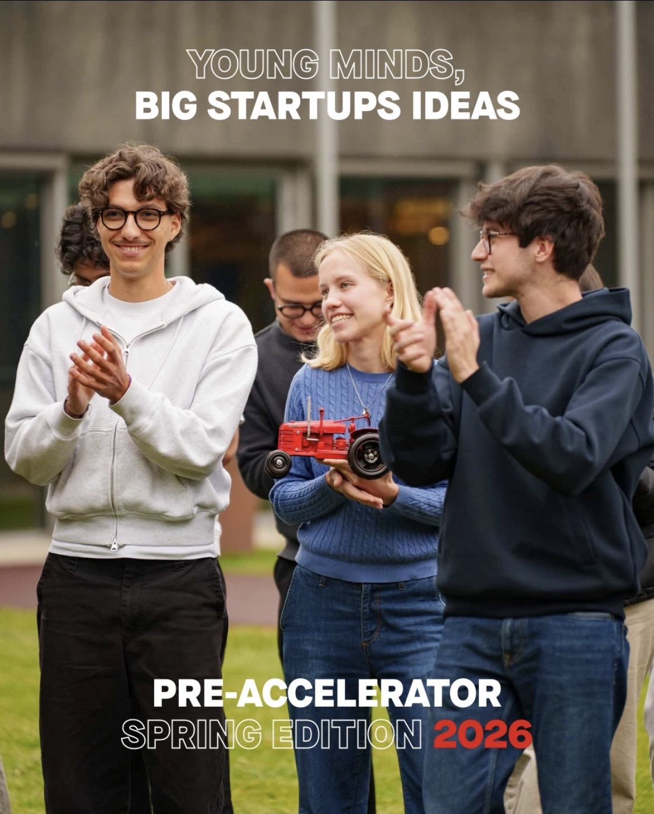
The research
Before defining any strategy, we went to the market directly. Qualitative interviews with wholesale operators, direct observation on the floor, and a survey across more than 100 commercial businesses. The finding that changed everything: over 70% of operators and their buyers were already using WhatsApp as their default channel for orders and communication. The market wasn't waiting for a new platform; it was waiting for something that worked inside the tools it already used.
The strategy
From that insight, we designed a WhatsApp AI agent as the core go to market channel, a solution that could centralise incoming orders for wholesalers and simplify purchasing for buyers without requiring a behaviour change. The scaling strategy was built around a pilot with the Mercato Agroalimentare della Sardegna, one of the largest wholesale food markets in Italy, as the beachhead to validate the model before expanding.
Materials
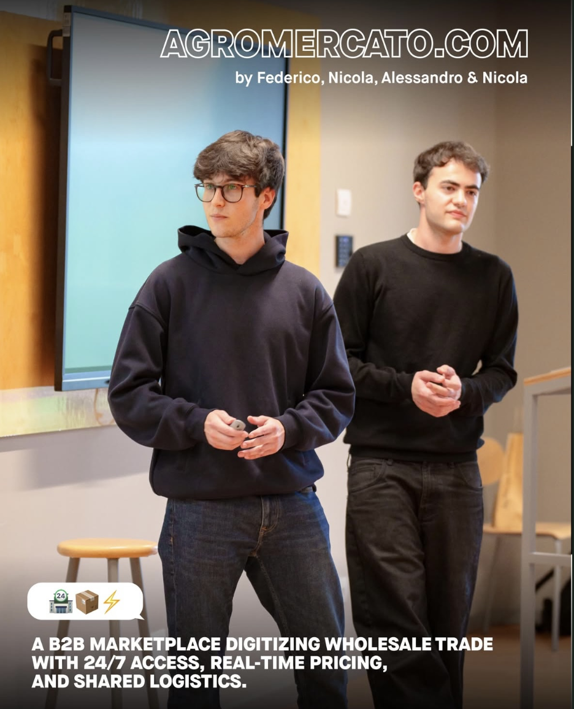
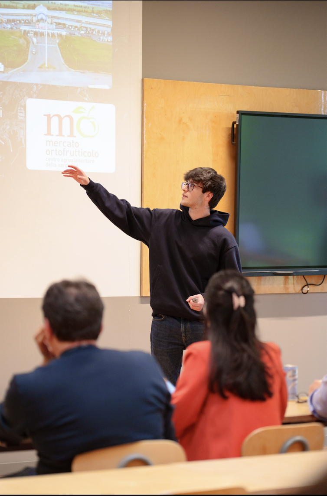

Final pitch · H Farm Startup Centre Pre Acceleration Program cohort · Spring 2025
Federico Sassu Verderi, Strategy & Go to Market · H Farm Startup Centre Pre Acceleration Program, Spring 2025.

The Lux Collective, a global hospitality group managing 18+ resorts across the Indian Ocean, China and Tanzania, commissioned H Farm College students to reimagine the social spaces of SOCIO, their newest urban lifestyle brand. The challenge: design distinctive USPs that could turn a hotel lobby into a 24/7 social hub for a guest who blurs the lines between work, life, and play. We placed 2nd out of 10 competing teams.
The brief
SOCIO targets the Social Nomad: location independent, community driven, wellness conscious travelers who find traditional hotels isolating and inadequate for how they actually live and work. The brief asked us to go beyond standard hospitality thinking and design social spaces that feel less like a hotel and more like a neighborhood hub that happens to have rooms.
Our approach
We started with the guest. I led the buyer persona definition and customer experience design, mapping the Social Nomad's daily rituals, needs and friction points across the full guest journey, from booking to arrival to the late night wind down. From that foundation we designed a concept for SOCIO's social spaces organized around those rituals: environments that shift identity throughout the day, with specific touchpoints designed to generate the spontaneous connections that define the Social Nomad experience.
Materials

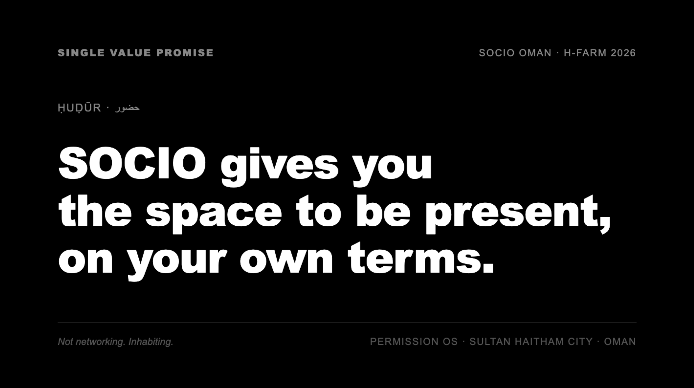
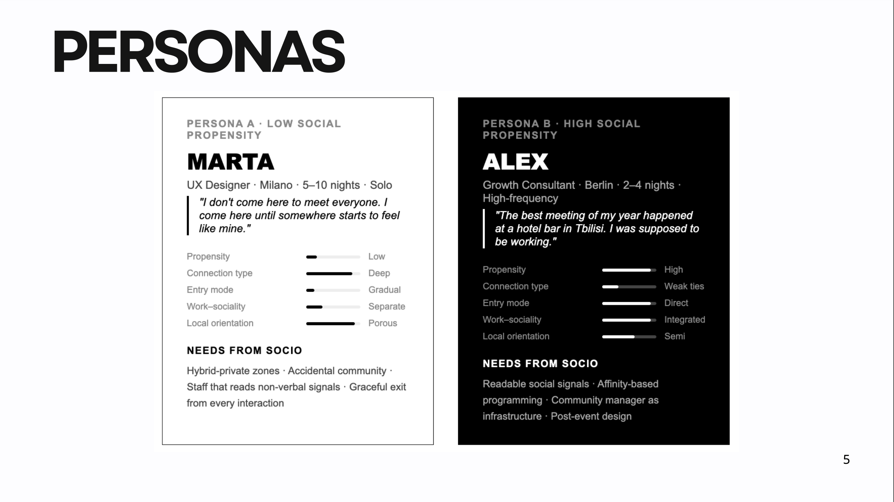
Federico Sassu Verderi, Buyer Persona & Customer Experience Design
LocaLì started as CheckTheStreet, a Waze style app for safe micro movements in the city, built around crowdsourced real time alerts on street level incidents. When financial projections and legal constraints made it clear the model wouldn't work, we didn't defend it; we questioned the problem from scratch and rebuilt around a sharper insight: international students don't need a safety app, they need local context from day one.
The insight
Every year, 50,000 international students arrive in Italy alone, full of expectations, and completely blind to the city they're about to live in for six months. Their only references are the few people they met in the first days and chaotic WhatsApp groups where thousands of messages pile up without answering the one question that matters: what should I do tonight, and where?
The problem compounds in two directions. Time: 180 days feel like an eternity until you realize every hour spent figuring out where to go is a piece of the experience gone. Resources: every tourist trap, every missed discount, every wrong neighborhood at the wrong hour is money and freedom you don't get back.
The result is a number that shouldn't exist: only 34% of international students manage to actually integrate into the city they live in. Not because they lack motivation, but because no tool was built for them.
The product
LocaLì works through three pillars. Explore maps the places that actually matter to international students, from quiet study rooms to the best spots to go out, so you stop navigating blind and start experiencing the city like someone who actually lives there.
Student Deals solves a specific invisibility problem: every city is full of discounts and benefits reserved for students, but they're scattered across fragmented websites, window signs and last minute word of mouth. Nobody finds them until it's too late. LocaLì aggregates them in one place: you walk in, show the code on the app linked to your student card, and pay less. Immediately.
Safe & Chill closes the loop: real time crowdsourced reports from other students in the community show you the safest route home, based on what's actually happening in the city at that moment.
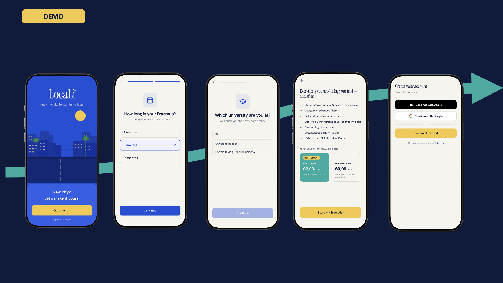
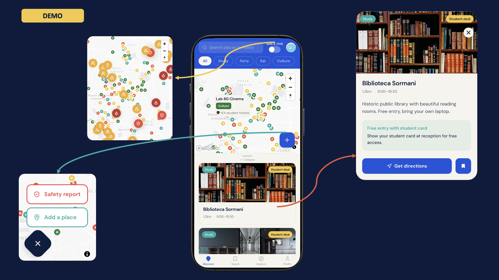
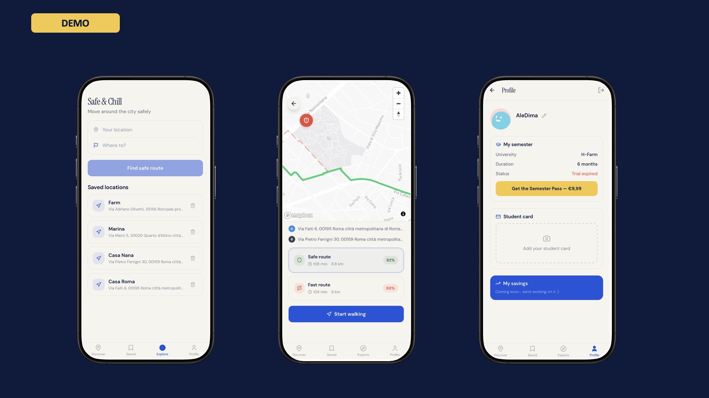
Federico Sassu Verderi, Strategy & Business Operations · Alessandro Di Mauro, Product Development & Tech Lead · Jacopo Cecchin, User Experience & Community Growth